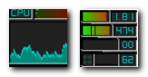
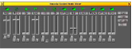
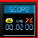

Among these applets wmdrawer, wmmount and wm-logout deserve special attention. Wmdrawer offers the possibilities of a complete menu (albeit, static) with just a little initial preparation. See the first image on the right. The little (64x64 - max side = 128 pixels) wmdrawer penguin icon can be positioned anywhere in the Dock. The tool tip will bring up the menu, positioned below the icon in this picture. Moving the tooltip to a menu icon will show the corresponding app's name, and clicking it will launch it. A 128 pixel wide button easily accomodates 4 columns, which could represent categories, of apps. What could be quicker? I generally reserve at least a couple of these launchers to program to open the directories containing the files associated with my current project. This usually requires changing no more than one word in the configuration file with each project change.
After installing wmdrawer, you need to put a personal configuration file in your home directory:
cp /usr/share/doc/wmdrawer/wmdrawerrc.example ~/.wmdrawerrc
Configuration is very easy. Open .wmdrawerrc in a text editor and configure. The app list is at the bottom and requires 3 fields for each app: tool tip, icon and launch command. You will need to add wmdrawer to Autostart, as is the case for all these applets. See the second image on the right, which displays the autostart section for the dock pictured at the bottom of this page, where more is said about the autostart format. Wmmount and wm-logout are not docklets, but rather apps in their own right. They do not ride in thhe Dock, but launchers for them can be easily put directly on your panel. Wmmount (.wmmount) needs to be configured for the storage partitions you want displayed.
An image of a complete dock with minimal replications (2 clocks) follows:
| Docklet | Function | Image |
|---|---|---|
| wmacpi | shows if battery is plugged in, charging, minutes of battery life remaining, and battery status (high - green, low - yellow, or critical - red) | |
| wmbattery | shows battery status | |
| fdpowermon | special tray battery indicator using colored (red, yellow, green) cups | |
| docker | system tray that alines entries in a row | |
| wmsystemtray | system tray that alines entries in groups of 4 in 64x64 pixel squares | |
| wmbutton | displays nine buttons, each of which can be configured to run three applications (left, middle, right click) - tool tip on button shows app names for that button - unable to make middle click work, so only provides launchers for a total of 18 apps instead of 27 | |
| wmbubble | more profuse the bubbles, the higher the CPU usage; the higher the water, the more memory being used | |
| wmcalc | performs all the functions of a simple four function calculator - includes a 10 digit alpha-numeric display, and twenty buttons for user input - clicking on the display clears the calculator | |
| pclock | analog clock that allows different XPMs as backgrounds as well as different configurations of hands and such to match | |
| wmcalclock | antialiased text display | |
| wmdate | 64x64 pixel calendar | |
| wmclock | digital time and 64x64 pixel calendar | |
| wmclockmon | alarm timer and different styles | |
| wmitime | shows standard time, date and Internet time | |
| a small pixmap of the current phase of the moon plus ststistics | ||
| wmtime | time and date in either analog or digital mode | |
| wmcube | shows CPU usage inluding a rotating figure that speeds up with useage | |
| wmforcast | displays the current temperature and an icon representing the current conditions - balloon tooltip displays forecast information - right click to configure | |
| wmfrog | displays current weather | |
| wmweather | displays current weather - start with wmweather -s KMSO, with KMSO replaced with the ICAO location indicator of your nearest weather station | |
| wmforkplop | monitors the forking activity of the kernel and displays the current 2 most CPU consuming processes | |
| wmifinfo | shows IP address, netmask, gateway and MAC address | |
| wmnd | graph of incoming/outgoing traffic, activity indicators | |
| wmcpu | displays a 64x64 box with CPU, Mem, Swap, Uptime | |
| wmcpuload | displays the current CPU usage as percentage value and chart | |
| wmmemload | displays the current memory and swap usage as a percentage value | |
| wmmon | CPU load, memory and swap usage meters and a display for system uptime | |
| wmtemp | continuously displays CPU and case temperatures | |
| wmsmpmon | has two graphs for each CPU and has three different looks which can be alternated by clicking the graph | |
| wmressel | displays the current X11 resolution and lets you change it through a popup menu | |
| wmxres | displays the current resolution and supposedly let's you scroll to others | |
| wmmount | display free space on file systems and by clicking on it you can mount and unmount file systems - very handy tool but is independent of the dock | |
| wmwifi | monitors wifi network interfaces | |
| wmwork | work timer | |
| wm-logout | panel applet, does not go on dock - does logout, suspend, hibernate, hybrid_suspend, reboot, power_off, force_power_off | |
| Following are Untested Applets (by me) Arranged Alphabetically | ||
| aclock.app | analog clock with display of smooth seconds | |
| ascd | small CD player and mixer, stays outside of dock | |
| asclock | displays the time of the day (digital, either 12 or 24 hour format), and the date; and provides three alternatives: one suitable for low color systems, one with "real" NeXTStep colors, and the third one is somewhat in between | |
| asmon | CPU load average, mem, swap and X mem usage and a graph for current CPU useage |  |
| wmbiff | displays the number of read and unread messages in multiple mailboxes | |
| wmcdplay | extremely customizable, provides great control | |
| wmibam | monitors the apm status using the intellegent battery monitor (ibam) | |
| wmix | allows toggling record source, muting individual channels, adjusting volume and balance | |
| wmmixer | stereo volume control and a recording source toggle button |  |
| wmrack | combines a CD player and a mixer in one 48x48 window | |
| wmsun | displays the current day's sun rise and set times | |
| wmtictactoe | allows you to play TicTacToe against another human or the computer |  |
| wmtv | supports channel presets, PAL/SECAM/NTSC, fine tuning, scanning of TV stations, use of external TV applications, and more | |
| wmwave | display statistical information about a current wireless or ethernet connection | |